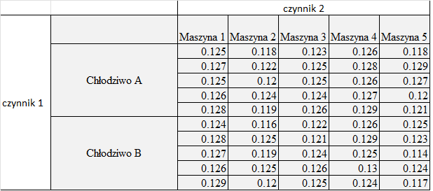

daneA <- read.table("ChłodziwoA.txt", header=T)
daneB <- read.table("ChłodziwoB.txt", header=T)Problem do rozwiązania
Wykonano po 5 pomiarów średnic drobnego elementu produkowanego na 5 różnych maszynach przy zastosowaniu dwu różnych chłodziw A i B. Należy sprawdzić, czy rodzaj chłodziwa ma jakikolwiek wpływ na średnicę wytwarzanych elementów.
Czynnikami wyróżniającymi są numer maszyny i rodzaj chłodziwa. Do analizy problemu wykorzystano dwuczynnikową analizę wariancji, która bada wpływ dwóch różnych jakościowych zmiennych niezależnych (jeden - maszyna, drugi - chłodziwo) na jedną ciągłą zmienną zależną (średnica elementu). Przykład i dane liczbowe zostały wzięte z poradnika: https://www.itl.nist.gov/div898/handbook/ppc/section2/ppc232.htm.
Dane liczbowe zostały przedstawione w tabeli na rysunku poniżej.

Układ zerowych hipotez, które będą testowane metodą Anova:
\(H0_1\): Czynnik 1 nie wpływa na zmienną zależną.
\(𝐻0_2\): Czynnik 2 nie wpływa na zmienną zależną.
\(𝐻0_{1-2}\): Wzajemna interakcja czynników 1 i 2 nie wpływa na zmienną zależną.
Analizę Anova i czynności przygotowawcze wykonano w R (RStudio). Analizę post-hoc porównania parami - w Pythonie.
Wczytanie i analiza danych
| Maszyna1 | Maszyna2 | Maszyna3 | Maszyna4 | Maszyna5 | |
|---|---|---|---|---|---|
| 1 | 0.125 | 0.118 | 0.123 | 0.126 | 0.118 |
| 2 | 0.127 | 0.122 | 0.125 | 0.128 | 0.129 |
| 3 | 0.125 | 0.120 | 0.125 | 0.126 | 0.127 |
| 4 | 0.126 | 0.124 | 0.124 | 0.127 | 0.120 |
| 5 | 0.128 | 0.119 | 0.126 | 0.129 | 0.121 |
| Maszyna1 | Maszyna2 | Maszyna3 | Maszyna4 | Maszyna5 | |
|---|---|---|---|---|---|
| 1 | 0.124 | 0.116 | 0.122 | 0.126 | 0.125 |
| 2 | 0.128 | 0.125 | 0.121 | 0.129 | 0.123 |
| 3 | 0.127 | 0.119 | 0.124 | 0.125 | 0.114 |
| 4 | 0.126 | 0.125 | 0.126 | 0.130 | 0.124 |
| 5 | 0.129 | 0.120 | 0.125 | 0.124 | 0.117 |